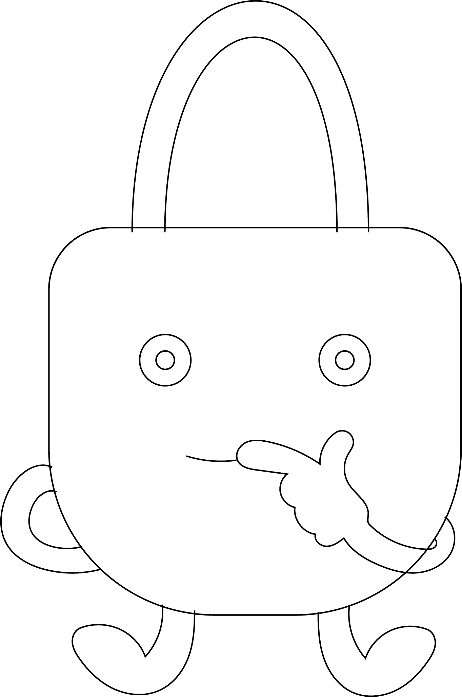

Sikkert kodeord
Hej!

Tryk på “start” for at teste hvor sikker du er på nettet.

Du skal oprette en ny profil, hvordan vil du oprette kodeordet dertil?

Vidste du at?
Ved at anvende det samme kodeord bliver det nemmere for hackere, at få adgang til flere af dine profiler, vil du stadig bruge det samme??
Vidste du at?
Den bedste ide er altid at oprette et nyt, men at lave et allerede eksisterende om er en okay løsning. Hvordan laver du det om?

God ide!
Hvor mange tegn laver du dit kodeord på?

Øv
Dit kodeord blev gættet og nu har de adgang til flere af dine platforme og profiler...
Vidste du at?
Den bedste løsning er stadig at oprette et helt nyt, men hvis du gør kodeordet betydeligt længere med en blanding af tal, store og små bogstaver og specialtegn, så er det mere sikkert.
Øv
Dit kodeord blev gættet, da det stadig er for nemt og minder om allerede eksisterende kode. Nu har de adgang til flere af dine platforme og profiler...
Øv
Dit korte kodeord blev gættet ret hurtigt.. Det ideele antal tegn er nemlig 15 tegn bestående af en blanding af små og store bogstaver, tal og specialtegn.

Øv
Selvom dit kodeord virkede rimelig avanceret, blev det gættet.. Det ideele antal tegn er nemlig 15 tegn bestående af en blanding af små og store bogstaver, tal og specialtegn.
Stage 1
God ide!
Det ideele antal tegn er nemlig 15 tegn bestående af en blanding af små og store bogstaver, tal og specialtegn.